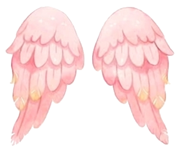

“Dios me regaló la vida y mis papás, todo su amor. Ahora quiero recibir la luz de la fe, rodeada de las personas que más quiero.”
Margarita
Junto a mí
Me acompañan
Mis papás
Carla
y
Sebastián

Mis padrinos
Leandro Colom
y
Madrina
Te espero
El gran día
Falta muy poquito…
0Días
0Horas
0Min
0Seg
La luz de la fe
Encendé mi velita
En el bautismo, la vela representa la luz que me acompañará toda la vida. Encendé la mía y acompañame con tus buenos deseos.
Tocá la vela
¡Gracias por iluminar mi camino!
Lo que voy a recibir
Los símbolos de mi bautismo
Agua
Me hace nacer a una vida nueva
Espíritu
La paz de Dios en mi corazón
Fe
El camino que hoy empiezo
Amor
El de todos ustedes, que me acompañan
¿Me acompañás?
Confirmá tu asistencia y, si querés, dejame un deseo para guardar de recuerdo.